用过哪些Linux命令？
- 文件和目录操作命令：ls、cd、mkdir、pwd、cp、mv、rm
- 文件内容查看和编辑命令：cat、tail、less、more、head、vi
- 系统信息查看命令：ps、top、free、df、du
- 用户和权限管理命令：chmod
- 网络相关命令：tcpudmp、ifconfig、ping、netstat、wget
11. 常用的linux指令有哪些
1.文件相关(mv mkdir cd ls) 2.进程相关( ps top netstate ) 3.权限相关(chmod chown useradd groupadd) 4.网络相关(netstat ip addr) 5.测试相关(测试连通性:ping 测试端口连通性:telnet)
linux常用命令有哪些？
- 文件相关(mv mkdir cd ls)
- 进程相关( ps top netstate )
- 权限相关(chmod chown useradd groupadd)
- 网络相关(netstat ip addr)
- 测试相关(测试网络连通性:ping 测试端口连通性:telnet)
8. Linux的常用命令了解过哪些？
- 文件相关(mv mkdir cd ls)
- 进程相关( ps top netstate )
- 权限相关(chmod chown useradd groupadd)
- 网络相关(netstat ip addr)
- 测试相关(测试网络连通性:ping 测试端口连通性:telnet)
会不会Linux？说一下你常用的 linux 命令
- 文件相关(mv mkdir cd ls)
- 进程相关( ps top netstate )
- 权限相关(chmod chown useradd groupadd)
- 网络相关(netstat ip addr)
- 测试相关(测试网络连通性:ping 测试端口连通性:telnet)
Linux常用命令你知道哪些？
- 文件相关(mv mkdir cd ls)
- 进程相关( ps top netstate )
- 权限相关(chmod chown useradd groupadd)
- 网络相关(netstat ip addr)
- 测试相关(测试网络连通性:ping 测试端口连通性:telnet)
那你常用的linux命令 可以自己说一说?
答：
- 文件相关(mv mkdir cd ls)
- 进程相关( ps top netstate )
- 权限相关(chmod chown useradd groupadd)
- 网络相关(netstat ip addr)
- 测试相关(测试网络连通性:ping 测试端口连通性:telnet)
说一些Linux常用命令？
-
文件相关(mv mkdir cd ls)
-
进程相关( ps top netstate )
-
权限相关(chmod chown useradd groupadd)
-
网络相关(netstat ip addr)
-
测试相关(测试网络连通性:ping 测试端口连通性:telnet)
Linux的常用命令了解过哪些？
- 文件相关(mv mkdir cd ls)
- 进程相关( ps top netstate )
- 权限相关(chmod chown useradd groupadd)
- 网络相关(netstat ip addr)
- 测试相关(测试网络连通性:ping 测试端口连通性:telnet)
5. linux下面的命令展开说一下？
文件操作类：
- cp：复制文件或目录，如 “cp src.txt dest/”，支持递归复制目录。
- mv：移动或重命名文件，如 “mv file.txt new_name.txt”，操作简单高效。
- rm：删除文件或目录，“rm -r dir/” 递归删除目录，“rm -f” 强制删除不提示。
- touch：创建空文件或更新文件时间戳，如 “touch test.txt” 创建新文件。
- mkdir：创建目录，“mkdir -p dir/subdir” 可递归创建多级目录。
- rmdir：删除空目录，如 “rmdir empty_dir”，目录非空则删除失败。
权限管理类：
- chmod：修改文件权限，“chmod +x script.sh” 添加执行权限，支持数字和符号模式。
- chown：更改文件所有者，“chown user:group file.txt” 可同时修改用户和组。
- chgrp：仅修改文件所属组，如 “chgrp new_group file.txt”，操作更精准。
文件查看类：
- cat：查看文件内容，“cat large_file.txt” 适合小文件，可配合管道使用。
- more/less：分屏查看大文件，less 功能更强大，支持向前 / 向后翻页。
- head/tail：查看文件首尾内容，“tail -f log.txt” 实时监控日志更新。
- grep：文本搜索工具，“grep 'error' log.txt” 支持正则表达式，灵活高效。
进程管理类：
- ps：查看进程状态，“ps -ef” 显示所有进程，结合 grep 可快速定位特定进程。
- top：动态监控系统进程，实时显示 CPU、内存占用最高的进程。
- kill：终止进程，“kill -9 PID” 强制终止顽固进程，谨慎使用避免数据丢失。
- pkill：通过进程名终止进程，“pkill firefox” 更方便，无需手动查找 PID。
网络操作类：
- ping：测试网络连通性，“ping www.google.com” 检查与目标主机的连接。
- ifconfig/ip：查看和配置网络接口，ip 命令是新一代工具，功能更强大。
- netstat：查看网络连接状态，“netstat -tulpn” 显示所有监听端口和进程。
- curl/wget：网络文件下载工具，curl 支持更多协议，wget 适合后台下载大文件。
讲一下你用过哪些Linux的命令？
用过 top、netstat、grep、sed、awk 这些命令
linux 怎么查看我这个程序打开的端口有哪些？比如写了一个 HTTP 服务器，我想知道这个 HTTP 服务器它监听的端口是什么？
可以通过 netstat 命令来观察这个程序监听了哪些端口，比如我想查看 nginx 进程监听了哪些端口号，那么可以通过如下命令查看：
netstat -napt | grep nginx
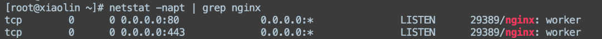
从上面的输出结果，可以观察到，nginx 监听了 80 和 443 端口。
linux 怎么看现在这个系统它的 CPU 使用率是多少？
可以通过 top 命令查看系统的 cpu 使用率。
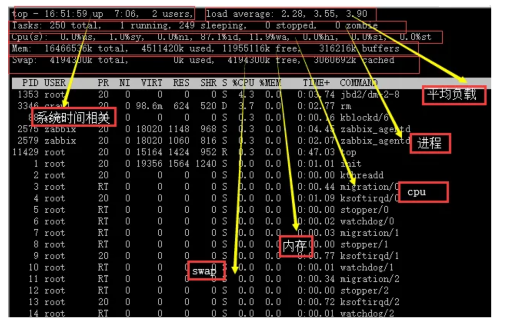
主要会展示：
- Load average（平均负载）：显示系统在最近1分钟、5分钟和15分钟内的平均负载情况。
- Tasks（任务）：显示当前运行、睡眠、停止和僵尸状态的进程数量。
- CPU usage（CPU使用情况）：显示CPU的总体使用率以及每个CPU核心的使用率。
- Memory usage（内存使用情况）：显示物理内存的总量、已使用量、空闲量、缓冲区和缓存区的使用量。
- Swap usage（交换空间使用情况）：显示交换空间的总量、已使用量和剩余量。
- 进程列表：显示当前运行的进程列表，包括进程的PID、用户、CPU占用率、内存占用率、进程状态、启动时间和进程命令。
linux 查看文件用什么看？
可以通过 cat、more、head、tail 等命令，查看文件的内容。
比如：
# cat，用于查看小文件的内容，输出到终端。
cat filename.txt
# more，用于分页查看文件内容，适合长文件。
more filename.txt
# head 查看文件的前几行，默认显示前10行。
head filename.txt
# tail，查看文件的最后几行，默认显示最后10行。
# 可以使用 -n 选项指定行数，如 tail -n 5 filename.txt 查看最后5行。
tail filename.txt
vim 怎么删除一行，vim 的一些快捷键有用过嘛？
删除一行：
-
进入普通模式：如果你在插入模式（编辑模式）中，先按
Esc键切换回普通模式。 -
删除光标所在的行：输入
dd：这将删除光标所在的整行。
一些常用的 Vim 快捷键，如下。
文件操作：
-
保存：输入
:w后按Enter。 -
保存并退出：输入
:wq后按Enter -
强制退出（不保存）：输入
:q!后按Enter。
光标移动：
- h：左移（左箭头）。
- j：下移（下箭头）。
- k：上移（上箭头）。
- l：右移（右箭头）。
- gg：跳到文件的开头。
- G：跳到文件的末尾。
编辑操作：
-
复制一行：输入
yy（yank the line）。 -
粘贴：在要粘贴的地方输入
p（paste）。 -
撤销：按
u。 -
重做：按
Ctrl + r。
退出 Vim：
-
保存并退出：输入
:wq。 -
不保存退出：输入
:q!。
一个操作系统，我们在衡量它的内存占用的时候，它一般会有哪些内存的部分？
读者答：堆和栈
小林补充：
这个其实是问你对free命令的理解。
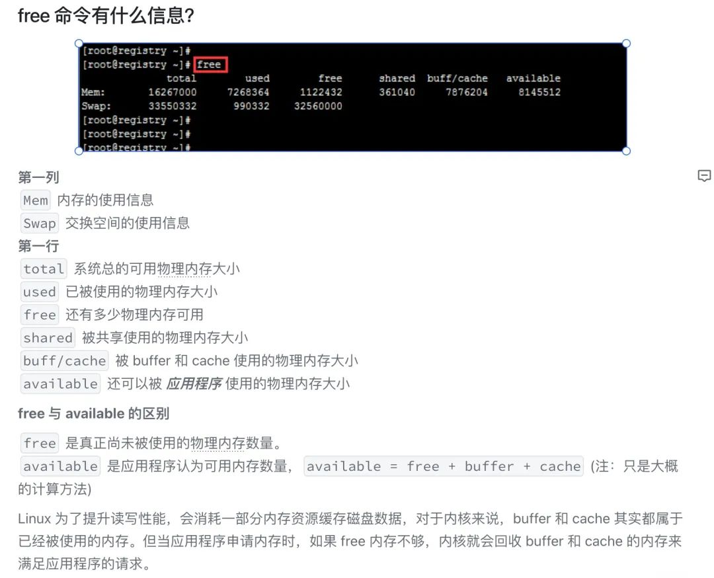
2. Linux如何查看进程号状态？
借助ps命令，能够获取进程的基本信息。下面是几种常见的用法：
# a：显示所有用户的进程。
# u：展示详细的用户信息。
# x：显示没有控制终端的进程。
# -e：等同于a，即显示所有进程。
# -f：呈现完整格式的输出。
ps aux # 显示所有用户的所有进程
ps -ef # 显示完整格式的进程信息
ps -ef | grep 进程名 # 查找特定进程
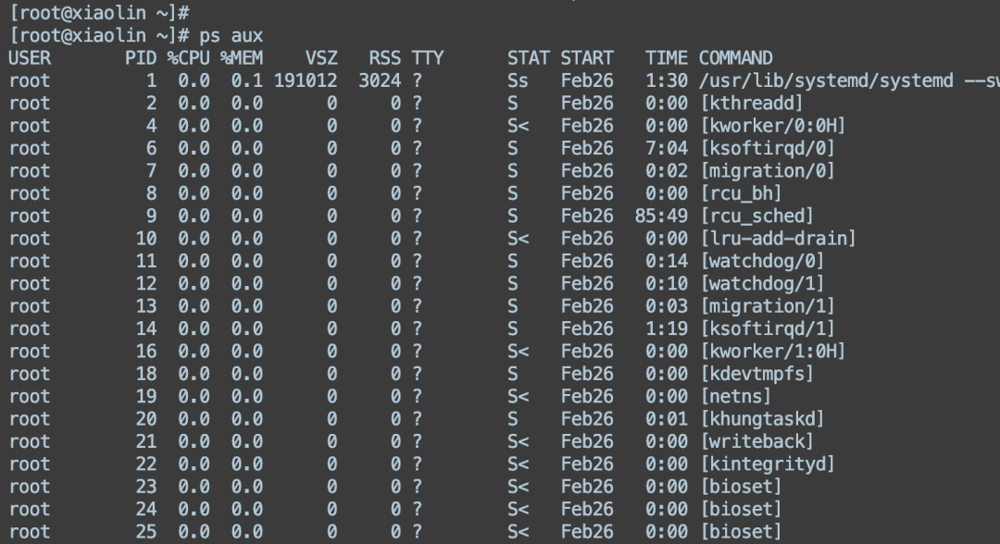
也可以用 top命令，可以实时显示系统中各个进程的资源占用状况。
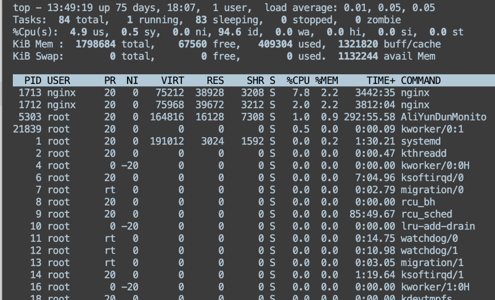
进入top界面后，按q可退出，按M能按内存占用排序，按P则按 CPU 占用排序。
linux命令 查看当前目录下文件？
ls 命令是查看文件和目录的命令，它能列出当前目录下的内容。
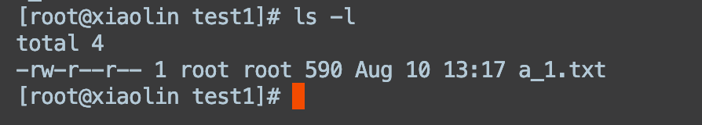
带上 -l 参数，则以长格式显示文件和目录的详细信息，包括文件权限、所有者、组、大小、修改时间等。
linux命令 如何查看当前目录下大文件？
du（disk usage）命令用于估算文件空间使用量，sort 命令用于对文本进行排序。结合这两个命令可以找出当前目录下占用空间较大的文件。
下面的命令会列出当前目录下所有文件和子目录的磁盘使用情况，并按文件大小降序排序，显示前 10 个最大的文件或目录：
# du 命令的参数：
# -a：显示所有文件和目录的磁盘使用情况，而不仅仅是目录。
# -h：以人类可读的格式显示文件大小（如 K、M、G）。
# .：表示当前目录。
# sort 命令的参数：
# -r：以降序排序。
# -h：按照人类可读的数字大小进行排序。
# head 命令的参数：
# -n 10：只显示前 10 行。
du -ah . | sort -rh | head -n 10
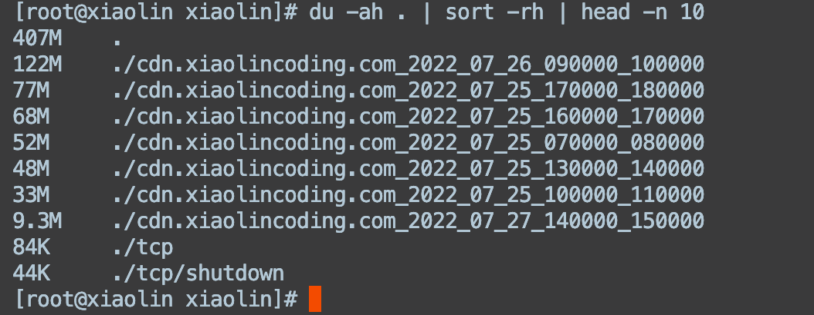
linux命令日志怎么查询关键字？
可以用 grep 命令来查询文件中的关键字。
比如，要在日志文件（如 example.log）中查找包含 “error” 关键字的行，可使用如下命令：
grep "error" example.log
如果服务应用部署在 Linux 上，CPU 打满后，想查看哪个进程导致的，用什么命令？
方式一 ， top：这是一个实时监控系统性能的工具。你只需在终端中输入：
top
然后可以按 P 键来按 CPU 使用率排序，查看哪些进程占用了最多的 CPU 资源。
方式二， ps：如果你想查看当前所有进程的 CPU 使用情况，可以使用：
ps aux --sort=-%cpu | head -n 10
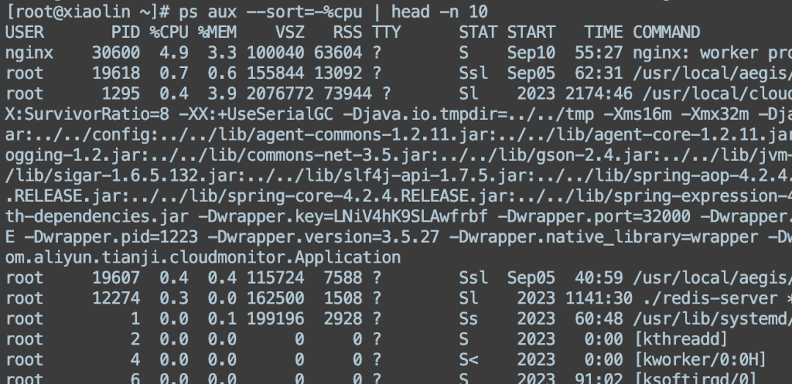
这将显示 CPU 使用率最高的前10个进程。
方式三，pidstat：如果你需要更详细的信息，可以使用 pidstat：
pidstat -u 1
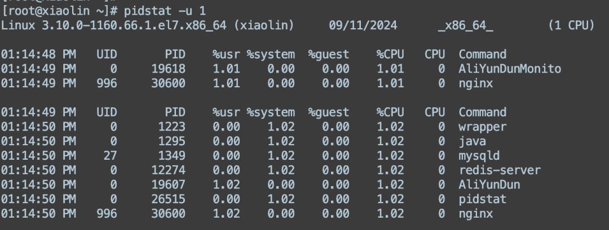
这将每秒显示所有进程的 CPU 使用情况。
修改文件权限用什么命令？
用 chmod 命令，可以修改文件或目录的权限。
以下是几个使用chmod命令修改文件权限的例子：
- 将文件（例如file.txt）设置为只读权限：
chmod 400 file.txt
- 将文件设置为所有者可读写权限，其他用户只能读取权限：
chmod 644 file.txt
- 将文件设置为所有者可读写执行权限，所属组用户可读执行权限，其他用户只能读取权限：
chmod 755 file.txt
- 将目录设置为所有者可读写执行权限，所属组用户可读执行权限，其他用户只能读取权限：
chmod 755 directory/
在这些例子中，chmod命令后面的三个数字代表了不同的权限组：
- 第一位表示所有者的权限。
- 第二位表示所属组的权限。
- 第三位表示其他用户的权限。
每个数字可以使用 0-7 之间的数值来表示权限：
- 0 表示没有权限。
- 1 表示执行权限。
- 2 表示写权限。
- 4 表示读权限。
可以根据需要自由组合这些数字来设置文件或目录的权限。
查找日志中某个字符的长度？
要在 Linux 中查找日志文件中某个字符的长度，你可以使用一些工具和命令来实现。其中，grep 是一个强大的命令行工具，可以用于在文件中查找匹配指定模式的行。你也可以结合一些其他命令来完成这个任务，如 awk 或者 sed。以下是一个示例命令，用于查找日志文件中某个字符的长度：
grep "search_string" log_file | awk '{ print length }'
在这个命令中：
- grep "search_string" log_file 会找到日志文件中包含 "search_string" 的所有行。
- awk '{ print length }' 会输出每一行的长度，即搜索到的 "search_string" 的长度。
如果你想查找日志文件中单个字符的长度，你可以直接使用 grep 命令配合 wc 命令来实现：
grep "c" log_file | wc -m
这个命令会计算搜索到的字符 "c" 在日志文件中出现的次数。
Linux 服务器当中如何查看负载情况？通过什么指标进行查看？
通常我们发现系统变慢时，我们都会执行top或者uptime命令，来查看当前系统的负载情况，比如像下面，我执行了uptime，系统返回的了结果，最后一个就是系统平均负载的情况。
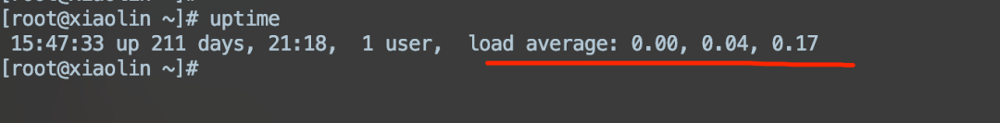
Load Average的三个数字，依次则是过去1分钟、5分钟、15分钟的平均负载。可以通过观察这三个数字的大小，可以简单判断系统的负载是下降的趋势还是上升的趋势。负载值一般不超过cpu核数的1-1.5倍，如果超过1.5倍，那就要重视，此时会严重影响系统。
- 如果 load average: 1.00, 5.00, 10.00 三个数字依次增大，则说明在过去的 1 分钟系统的负载比过去 15 分钟系统的负载小，表明系统的负载是下降的趋势。
- 如果 load average: 10.00, 5.00, 1.00 三个数字依次降低，则说明在过去的 1 分钟系统的负载比过去 15 分钟系统的负载大，表明系统的负载是上升的趋势。
- 如果 load average: 0.07, 0.04, 0.0 三个数字基本相同，或者相差不大， 表明系统的负载是平稳的。
平均负载是指单位时间内，处于可运行状态和不可中断状态的进程数。所以，它不仅包括了正在使用 CPU 的进程，还包括等待 CPU 和等待 I/O 的进程。
而 CPU 使用率，是单位时间内 CPU 繁忙情况的统计，跟平均负载并不一定完全对应。比如：
- CPU 密集型进程，使用大量 CPU 会导致平均负载升高，此时这两者是一致的；
- I/O 密集型进程，等待 I/O 也会导致平均负载升高，但 CPU 使用率不一定很高；
- 大量等待 CPU 的进程调度也会导致平均负载升高，此时的 CPU 使用率也会比较高。
我们现在很清楚的知道导致平均负载高的情况，不只是看 CPU 的使用率，也要观察系统 I/O 等待时间高不高。
当发现平均负载升高时，可以使用 mpstat 命令查看 CPU 的性能。
# -P ALL 表示监控所有CPU，后面数字1表示间隔1秒后输出一组数据
$ mpstat -P ALL 1
Linux 2.6.32-431.el6.x86_64 (lzc) 11/05/2019 _x86_64_ (2 CPU)
07:51:45 PM CPU %usr %nice %sys %iowait %irq %soft %steal %guest %idle
07:51:50 PM all 42.90 0.00 49.39 0.41 0.00 4.56 0.00 0.00 2.74
07:51:50 PM 0 44.38 0.00 48.67 0.41 0.00 2.86 0.00 0.00 3.68
07:51:50 PM 1 41.57 0.00 49.80 0.40 0.00 6.43 0.00 0.00 1.81
从上面发现
- CPU 的用户层（%usr）使用率高达45%左右；
- CPU 的系统层（%sys）使用率高达50%左右；
- CPU 的 I/0 - 等待（%iowait）占用率为0.41%；
- CPU 的空闲率（%idle）只有2~3%。
可以推断出是由于 CPU 使用率导致平均负载升高的情况。假设只有 CPU 的I/0 等待（%iowait）占用率高，CPU 用户层和系统层使用率很轻松，那么导致平均负载升高的原因就是 iowait 的升高。判断了是因为 CPU 使用率升高还是 iowait 升高导致平均负载升高后，我们还需要定位是哪个进程导致的。可以用 pidstat 来查询：
# 间隔1秒后输出一组数据，-u表示CPU指标
$ pidstat -u 1
08:07:55 PM PID %usr %system %guest %CPU CPU Command
08:07:56 PM 4 0.00 1.00 0.00 1.00 0 ksoftirqd/0
08:07:56 PM 9 0.00 1.00 0.00 1.00 1 ksoftirqd/1
08:07:56 PM 11 0.00 16.00 0.00 16.00 0 events/0
08:07:56 PM 12 0.00 20.00 0.00 20.00 1 events/1
08:07:56 PM 616 7.00 6.00 0.00 13.00 1 pppoe
08:07:56 PM 2745 6.00 6.00 0.00 12.00 1 pppoe
可以发现是 events/0 和 events/1 内核进程 CPU 使用率非常高，所以可能这两个进程导致平均负载升高。
top 命令和 free 命令都可以查看内存，有什么区别？
free 命令主要是查看系统的内存使用情况
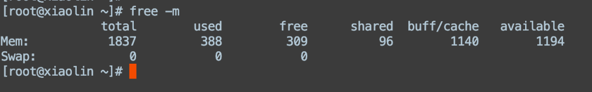
物理内存：- total：总物理内存大小
- used：已使用的内存
- free：未使用的内存
- shared：共享内存大小
- buff/cache：缓冲和缓存内存大小
- available：当前可用的内存，考虑到了部分缓存可以被快速释放的情况
交换内存：
- total：总交换内存大小
- used：已使用的交换内存
- free：未使用的交换内存
top 命令，除了会显示系统内存情况，还会显示系统任务情况、CPU使用情况、各进程状态等信息。
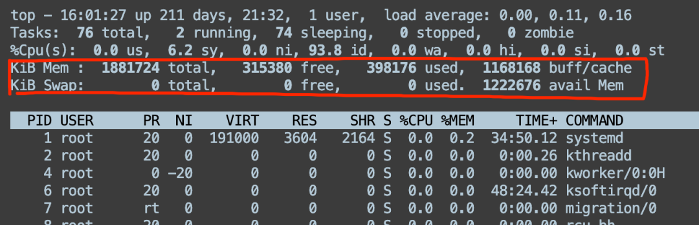
怎么判断服务器内存是否够用？如何查看服务器性能瓶颈是否是内存？
使用 free 命令查看内存使用情况
使用 free -m 命令可以查看内存的总体使用情况，输出结果会大致如下：
total used free shared buff/cache available
Mem: 7982 1746 2523 155 3703 5818
Swap: 2047 6 2041
关注以下几项：
- used：已经使用的内存。
- free：可用的空闲内存。
- available：可用的内存，这包括了操作系统缓存，这个值更能代表实际可用内存。
如果 available 的值长期很低，可能表明内存不足。
通过观察是否频繁使用 Swap 空间
可以通过 free 命令观察 Swap 空间的使用情况：
Swap: 2047 6 2041
- 如果 Swap 空间使用过多（例如，接近 Swap total），说明物理内存不足。
检查 dmesg 输出是否有 OOM（Out of Memory）信息
查看 /var/log/messages 或者使用 dmesg 命令来查看系统日志，检查是否有 OOM（Out of Memory）错误。
dmesg | grep -i "out of memory"
如果存在 OOM 错误，说明内存不足是一个明显的问题。
使用 vmstat 观测内存使用状况
vmstat 是另一个强大的工具，可以帮助你监控系统的内存使用情况。执行 vmstat 1 每秒刷新一次：
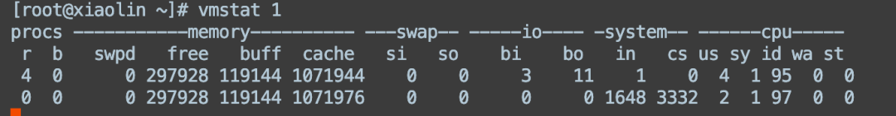
特别关注以下字段：- si（swap in）和 so（swap out）：如果这两个值较高，说明系统频繁使用交换空间，表明物理内存可能不足。
- free：空闲内存。
- buff 和 cache：缓存和缓冲区的使用情况。
如何判断内存是否是满的情况？通过什么指标判断内存的使用率？
- 如果 free 和 available 都非常低，而 used 很高，内存基本上是满的。
- Swap 使用频繁且使用率较高，那么内存基本上是满的。
- 如果 dmesg 日志，出现 OOM 相关信息，说明内存不足导致了一些进程被杀掉。
- ps 或 top 显示大部分内存被少数几个进程占用，那么内存基本上是满的。
如何查看当前系统的内存使用情况？
可以通过 top 或者 freem 命令都可以查看内存情况 top 命令的 mem 信息这一栏，就是系统内存的使用：
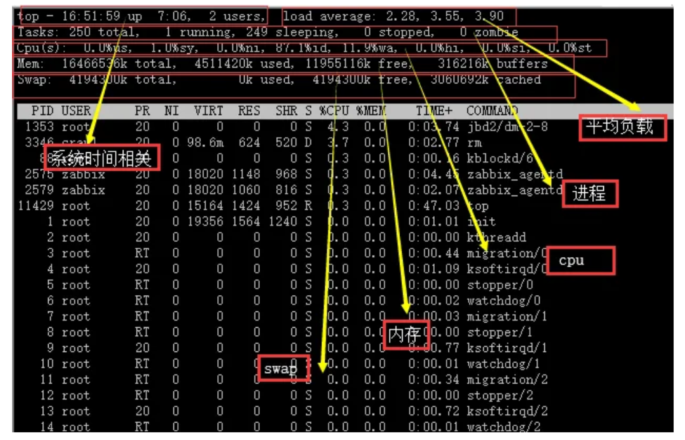
free 命令就是专门看系统内存的使用情况。
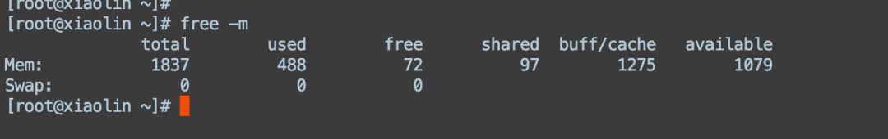
Linux是怎么看内存使用情况的？
使用 free -m 命令可以查看内存的总体使用情况，输出结果会大致如下：
total used free shared buff/cache available
Mem: 7982 1746 2523 155 3703 5818
Swap: 2047 6 2041
关注以下几项：
- used：已经使用的内存。
- free：可用的空闲内存。
- available：可用的内存，这包括了操作系统缓存，这个值更能代表实际可用内存。
如果 available 的值长期很低，可能表明内存不足。
如果想查看是进程的哪个线程，用什么命令？
在 ps 和 top 命令加一下参数，就能看到线程状态了：
top -H -p <进程ID>
ps -eT | grep <进程名或线程名>
执行top -H -p pid,查看该进程下占用CPU高的线程id，比如我们定位到我们的占用CPU比较高的进程id为99770
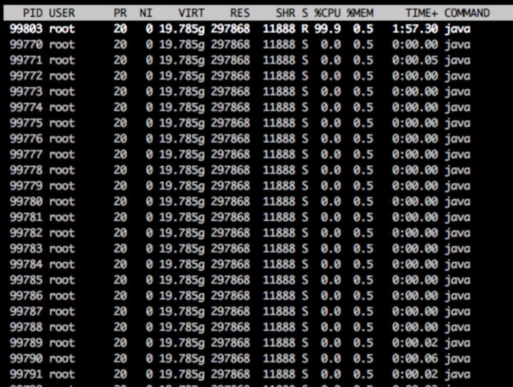
我们会看pid为99803的线程占用CPU最高，将其转换为16进制数，为0x185db
怎么判断操作系统有没有在内存替换？或者说怎么统计内存替换的频率？
我们可以使用 sar -B 1 命令来观察：
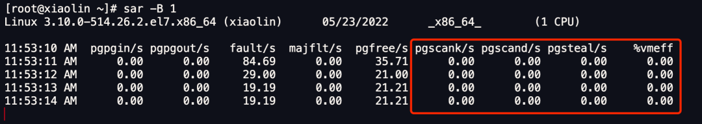
图中红色框住的就是后台内存回收和直接内存回收的指标，它们分别表示：- pgscank/s : kswapd(后台回收线程) 每秒扫描的 page 个数。
- pgscand/s: 应用程序在内存申请过程中每秒直接扫描的 page 个数。
- pgsteal/s: 扫描的 page 中每秒被回收的个数（pgscank+pgscand）。
如果系统时不时发生抖动，并且在抖动的时间段里如果通过 sar -B 观察到 pgscand 数值很大，那大概率是因为「直接内存回收」导致的。
top 命令查看是多少个 CPU 核心？
执行 top 命令之后，按数字 1，就能显示 CPU 有多少个核心了。
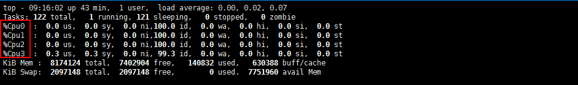
什么命令可以查看各个进程占用的资源？
可以通过 ps 命令或者 top 命令来查看进程的状态。比如我想看 nginx 进程的状态，可以在 linux 输入这条命令：
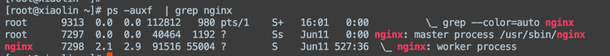
top 命令除了能看进程的状态，还能看到系统的信息，比如系统负载、内存、cpu 使用率等等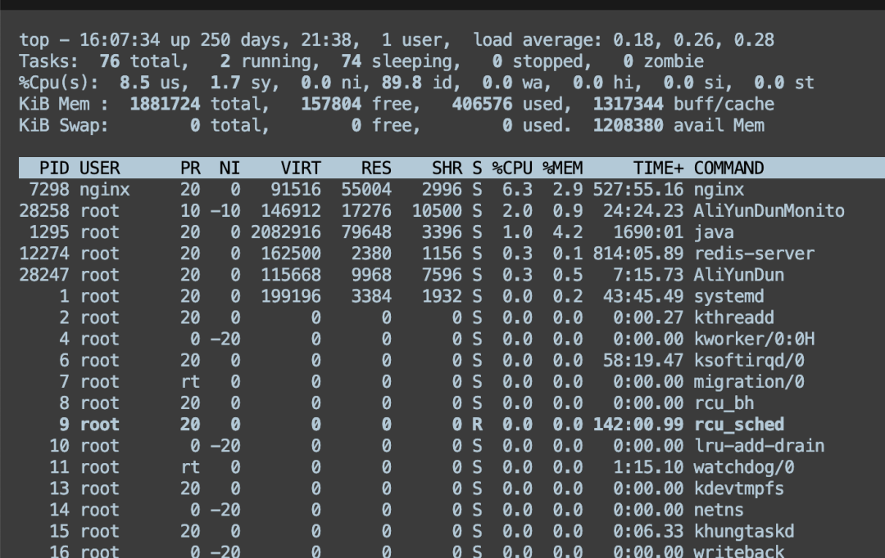
top命令显示出来的各个字段都是啥意思？
主要会展示：
- Load average（平均负载）：显示系统在最近1分钟、5分钟和15分钟内的平均负载情况。
- Tasks（任务）：显示当前运行、睡眠、停止和僵尸状态的进程数量。
- CPU usage（CPU使用情况）：显示CPU的总体使用率以及每个CPU核心的使用率。
- Memory usage（内存使用情况）：显示物理内存的总量、已使用量、空闲量、缓冲区和缓存区的使用量。
- Swap usage（交换空间使用情况）：显示交换空间的总量、已使用量和剩余量。
- 进程列表：显示当前运行的进程列表，包括进程的PID、用户、CPU占用率、内存占用率、进程状态、启动时间和进程命令。
怎么查看某个端口是否被占用？
可以通过 lsof 或者 netstate 命令查看，比如查看 80 端口。lsof ：
[root@xiaolin ~]# lsof -i :80
COMMAND PID USER FD TYPE DEVICE SIZE/OFF NODE NAME
nginx 929 root 6u IPv4 15249 0t0 TCP *:http (LISTEN)
nginx 929 root 7u IPv6 15250 0t0 TCP *:http (LISTEN)
nginx 934 nginx 6u IPv4 15249 0t0 TCP *:http (LISTEN)
nginx 934 nginx 7u IPv6 15250 0t0 TCP *:http (LISTEN)
AliYunDun 16507 root 10u IPv4 40212783 0t0 TCP xiaolin:41830->100.100.30.26:http (ESTABLISHED)
netstate：
[root@xiaolin ~]# netstat -napt | grep 80
tcp 0 0 0.0.0.0:80 0.0.0.0:* LISTEN 929/nginx: master p
怎么看端口被哪个进程监听了？
netstat -napt | grep 443
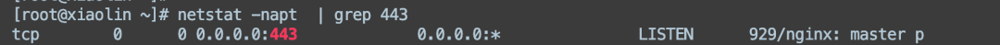
linux 如何查看进程状态？
可以通过 ps 命令或者 top 命令来查看进程的状态。比如我想看 nginx 进程的状态，可以在 linux 输入这条命令：top 命令除了能看进程的状态，还能看到系统的信息，比如系统负载、内存、cpu 使用率等等
怎么看进程当中有哪些线程？
使用ps命令：通过在终端中运行ps -eLf命令，可以列出所有进程及其对应的线程信息。每个线程都会显示线程ID（TID）、进程ID（PID）、线程优先级（PRI）、CPU占用率（%CPU）、内存占用（%MEM）等信息。
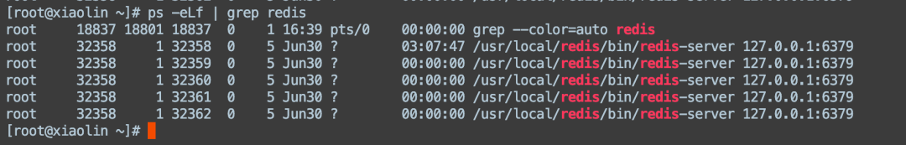
怎么查看网络的状态？
可以通过 netstat 命令。
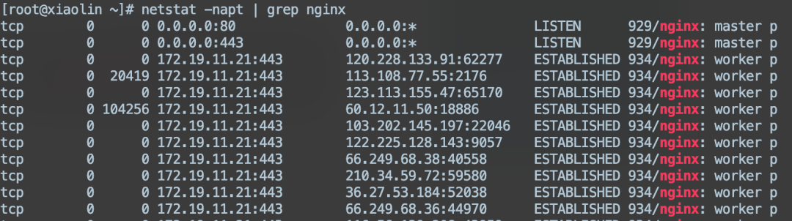
如果只想看close_wait状态的连接，怎么看？
netstat -napt | grep close_wait
sed和awk有什么区别？
都是用于文本处理命令的工具，区别在于：
- sed，主要用于对文本进行替换、删除、插入等操作。它适合对整行文本进行处理，可以通过正则表达式匹配文本进行操作。
- awk，可以实现更复杂的文本处理逻辑，包括对字段的操作、条件判断、循环等。它适合处理结构化的文本数据，可以按列对数据进行处理。
sed适合简单的文本替换和编辑操作，而awk适合处理结构化的文本数据并实现更复杂的处理逻辑
14. 平时会用到哪些linux命令
- 文件相关(mv mkdir cd ls)
- 进程相关( ps top netstate )
- 权限相关(chmod chown useradd groupadd)
- 网络相关(netstat ip addr)
- 测试相关(测试网络连通性:ping 测试端口连通性:telnet)
15. linux下存在一个日志文件，格式为id size time，命令行如何统计相同id的总size大小和平均time
可以借助 awk 命令来统计日志文件里相同 id 的总 size 以及平均 time。
假定日志文件名为 log.txt，以下是实现该功能的 awk 命令：
awk '{
# 累加每个 id 的 size 总和
size_sum[$1]+=$2;
# 累加每个 id 的 time 总和
time_sum[$1]+=$3;
# 记录每个 id 出现的次数
count[$1]++;
}
END {
for (id in size_sum) {
# 计算每个 id 的平均 time
avg_time = time_sum[id] / count[id];
# 输出结果
printf "%s %.2f %.2f\n", id, size_sum[id], avg_time;
}
}' log.txt
假设 log.txt 文件内容如下：
1 10 20
1 20 30
2 15 25
2 25 35
运行上述 awk 命令后，输出结果如下：
1 30.00 25.00
2 40.00 30.00
这表明 id 为 1 的总 size 是 30，平均 time 是 25；id 为 2 的总 size 是 40，平均 time 是 30。
7. Linux 查找文件内容命令是什么？
可以用 grep 命令。
grep [选项] '搜索模式' 文件名
比如，查找test.txt文件里包含example的行：
grep 'example' test.txt
如果要递归查找当前目录及其子目录下所有文件中包含example的行，可使用如下命令：
grep -r 'example' .
这里的-r选项代表递归搜索，.表示当前目录。
怎么查看日志？
tail -f test.log
怎么查看哪个端口被哪个进程占用？
可以通过 lsof 或者 netstate 命令查看，比如查看 80 端口。
lsof ：
[root@xiaolin ~]# lsof -i :80
COMMAND PID USER FD TYPE DEVICE SIZE/OFF NODE NAME
nginx 929 root 6u IPv4 15249 0t0 TCP *:http (LISTEN)
nginx 929 root 7u IPv6 15250 0t0 TCP *:http (LISTEN)
nginx 934 nginx 6u IPv4 15249 0t0 TCP *:http (LISTEN)
nginx 934 nginx 7u IPv6 15250 0t0 TCP *:http (LISTEN)
AliYunDun 16507 root 10u IPv4 40212783 0t0 TCP xiaolin:41830->100.100.30.26:http (ESTABLISHED)
netstate：
[root@xiaolin ~]# netstat -napt | grep 80
tcp 0 0 0.0.0.0:80 0.0.0.0:* LISTEN 929/nginx: master p
用shell命令替换一个文件中的字符串
可以使用sed命令。以下是一个示例：
sed -i 's/旧字符串/新字符串/g' 文件名
在上面的命令中，-i选项表示直接在原始文件中进行修改，而不是输出到标准输出。s/旧字符串/新字符串/g是替换操作的模式，其中旧字符串是要替换的字符串，新字符串是替换后的新字符串。g表示全局替换，即一行中出现多次的旧字符串都会被替换。
请注意，这将直接修改原始文件，如果需要备份原始文件，可以在-i选项后面指定一个备份文件的扩展名，例如-i.bak，这将在替换前备份原始文件。
例如，假设要将文件example.txt中的字符串Hello替换为Hi，可以运行以下命令：
sed -i 's/Hello/Hi/g' example.txt
linux中有一个日志文件，日志文件中记录了访问请求的信息，第一列是访问的日期，第二列是请求的ip，第三列是请求的耗时，写一条shell命令来查到请求耗时最高的10条记录
要查找请求耗时最高的10条记录，可以使用以下Shell命令：
sort -k3 -nr 日志文件 | head -n 10
在上面的命令中，sort -k3 -nr用于按第三列（请求耗时）进行倒序排序。-k3表示按第三列排序，-n表示按数字排序，-r表示倒序排序。然后，使用head -n 10来获取排序后的前10行，即耗时最高的10条记录。
将命令中的“日志文件”替换为实际的日志文件路径，即可查找到请求耗时最高的10条记录。
假如cpu跑到100%，你的解决思路是什么？
思路如下：
- 先通过 top 命令，定位到占用 cpu 高的进程
-
然后通过
ps -T -p<> <进程ID>命令找到进程中占用比较高的线程 - 然后通过 jstack 命令去查看该线程的堆栈信息
- 根据输出的堆栈信息，去项目中定位代码，看是否发生了死循环而导致cpu跑到100%
怎么查看哪个端口被哪个进程占用？
可以通过 lsof 或者 netstate 命令查看，比如查看 80 端口。lsof ：
[root@xiaolin ~]# lsof -i :80
COMMAND PID USER FD TYPE DEVICE SIZE/OFF NODE NAME
nginx 929 root 6u IPv4 15249 0t0 TCP *:http (LISTEN)
nginx 929 root 7u IPv6 15250 0t0 TCP *:http (LISTEN)
nginx 934 nginx 6u IPv4 15249 0t0 TCP *:http (LISTEN)
nginx 934 nginx 7u IPv6 15250 0t0 TCP *:http (LISTEN)
AliYunDun 16507 root 10u IPv4 40212783 0t0 TCP xiaolin:41830->100.100.30.26:http (ESTABLISHED)
netstate：
[root@xiaolin ~]# netstat -napt | grep 80
tcp 0 0 0.0.0.0:80 0.0.0.0:* LISTEN 929/nginx: master p
用shell命令替换一个文件中的字符串
可以使用sed命令。以下是一个示例：
sed -i 's/旧字符串/新字符串/g' 文件名
在上面的命令中，-i选项表示直接在原始文件中进行修改，而不是输出到标准输出。
s/旧字符串/新字符串/g是替换操作的模式，其中旧字符串是要替换的字符串，新字符串是替换后的新字符串。g表示全局替换，即一行中出现多次的旧字符串都会被替换。
请注意，这将直接修改原始文件，如果需要备份原始文件，可以在-i选项后面指定一个备份文件的扩展名，例如-i.bak，这将在替换前备份原始文件。
例如，假设要将文件example.txt中的字符串Hello替换为Hi，可以运行以下命令：
sed -i 's/Hello/Hi/g' example.txt
linux中有一个日志文件，日志文件中记录了访问请求的信息，第一列是访问的日期，第二列是请求的ip，第三列是请求的耗时，写一条shell命令来查到请求耗时最高的10条记录
要查找请求耗时最高的10条记录，可以使用以下Shell命令：
sort -k3 -nr 日志文件 | head -n 10
在上面的命令中，sort -k3 -nr用于按第三列（请求耗时）进行倒序排序。-k3表示按第三列排序，-n表示按数字排序，-r表示倒序排序。然后，使用head -n 10来获取排序后的前10行，即耗时最高的10条记录。将命令中的“日志文件”替换为实际的日志文件路径，即可查找到请求耗时最高的10条记录。
假如cpu跑到100%，你的解决思路是什么？
思路如下：
- 先通过 top 命令，定位到占用 cpu 高的进程
- 然后通过 ps -T -p<> <进程ID> 命令找到进程中占用比较高的线程
- 然后通过 jstack 命令去查看该线程的堆栈信息
- 根据输出的堆栈信息，去项目中定位代码，看是否发生了死循环而导致cpu跑到100%
kill -9 9的意义是什么，如何做到强制终止线程
kill -9 是一个Linux/Unix系统中的命令，用于向进程发送信号。-9代表的是SIGKILL信号，这是一种无法被捕获、忽略或重定义的信号，用于立即终止一个进程。当使用kill -9命令时，操作系统会立即停止目标进程，不会给进程任何清理或释放资源的机会。
kill命令是针对进程的，而不是针对线程的。要终止一个线程，你需要知道该线程所属的进程ID（PID）和线程ID（TID）。
以下是几种终止线程的方法：
-
使用
kill命令终止整个进程：如果你想要终止包含特定线程的整个进程，可以使用kill命令发送SIGKILL信号给进程。
kill -9 <PID>
-
使用
kill命令结合ps和grep命令查找线程ID：如果你只知道线程的名称或某些特征，可以使用ps和grep命令来查找线程ID，然后使用kill命令终止线程。
ps -eLf | grep <thread_name_or_feature> | grep -v grep | awk '{print $2}' | xargs kill -9
这里的<thread_name_or_feature>是线程的名称或某些特征。
linux看端口占用情况，都有什么命令？
可以通过 lsof 或者 netstate 命令查看，比如查看 80 端口。
lsof ：
[root@xiaolin ~]# lsof -i :80
COMMAND PID USER FD TYPE DEVICE SIZE/OFF NODE NAME
nginx 929 root 6u IPv4 15249 0t0 TCP *:http (LISTEN)
nginx 929 root 7u IPv6 15250 0t0 TCP *:http (LISTEN)
nginx 934 nginx 6u IPv4 15249 0t0 TCP *:http (LISTEN)
nginx 934 nginx 7u IPv6 15250 0t0 TCP *:http (LISTEN)
AliYunDun 16507 root 10u IPv4 40212783 0t0 TCP xiaolin:41830->100.100.30.26:http (ESTABLISHED)
netstate：
[root@xiaolin ~]# netstat -napt | grep 80
tcp 0 0 0.0.0.0:80 0.0.0.0:* LISTEN 929/nginx: master p
如何查看一个进程的使用情况
可以通过 ps 命令或者 top 命令来查看进程的状态。
比如我想看 nginx 进程的状态，可以在 linux 输入这条命令：
top 命令除了能看进程的状态，还能看到系统的信息，比如系统负载、内存、cpu 使用率等等
linux命令行如何找到占用端口的进程PID
可以通过 lsof 命令来找到占用端口的进程 ID，例如要查找占用 TCP 端口 3306 的进程 PID，可以执行以下命令：
lsof -i :3306 -sTCP:LISTEN
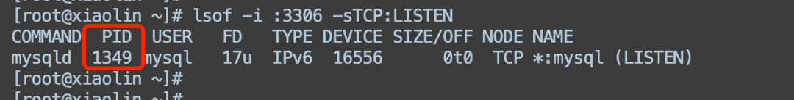
上述命令中，-i参数用于指定要监听的网络地址和端口号，:后面跟上端口号；-sTCP:LISTEN表示只列出状态为监听（LISTEN）的 TCP 连接，这样可以更精准地找到占用指定端口的进程。执行该命令后，如果有进程占用 3306 端口，会显示相关进程信息，其中PID列即为进程的 PID 号。
也可以通过 netstat 命令来找到占用端口的进程 ID，例如要查找占用 TCP 端口 3306 的进程 PID，可以执行以下命令：
netstat -tulnpe | grep :3306
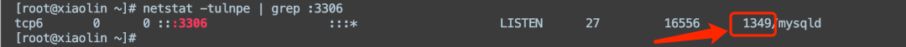
上述命令中，-t表示列出 TCP 连接，-u表示列出 UDP 连接，-l表示只列出处于监听状态的连接，-n表示以数字形式显示地址和端口号，避免进行 DNS 解析，从而加快命令执行速度，-p表示显示占用该连接的进程 ID 和进程名称，-e表示显示扩展信息。管道符|将netstat命令的输出作为grep命令的输入，grep :3306用于在netstat命令的输出结果中查找包含:8080的行，即找到占用 3306 端口的进程相关信息，其中包含进程的 PID 号。
linux 用top命令你一般关注什么？
答：
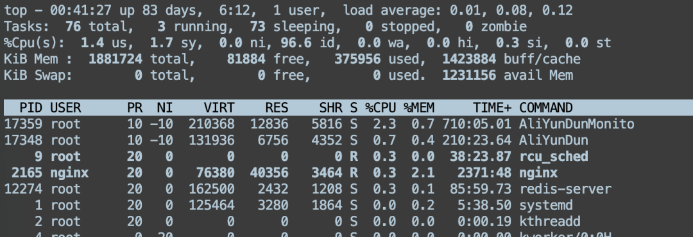
- CPU利用率：关注系统整体的CPU利用率以及各个进程的CPU占用情况，可以通过查看%CPU列来了解。
- 内存使用：关注系统的内存使用情况，包括总内存、已使用内存和空闲内存等，可以通过查看内存相关的统计信息来了解。
- 负载情况：关注系统的负载情况，包括1分钟、5分钟和15分钟的负载平均值，可以通过查看load average来了解。
- I/O活动：关注系统的磁盘I/O活动情况，包括磁盘的读写速度、等待时间等，可以通过查看磁盘相关的统计信息来了解。
已知一个进程名，如何杀掉这个进程？
在Linux 操作系统，可以使用kill命令来杀死进程。
首先，使用ps命令查找进程的PID（进程ID），然后使用kill命令加上PID来终止进程。例如：
ps -ef | grep <进程名> // 查找进程的PID
kill <PID> // 终止进程
kill -9 使用的是哪种？
- 信号
fork创建子进程有哪些特点呢？
- 父子进程：fork调用后，会创建一个新的子进程，该子进程与父进程几乎完全相同，包括代码、数据和打开文件等。子进程从fork调用的位置开始执行，父进程和子进程在fork调用之后的代码处继续执行。
- 资源继承：子进程继承了父进程的大部分资源，包括打开的文件、文件描述符、信号处理器等。但是有些资源（如互斥锁和定时器）可能需要进行特殊处理，以避免竞争条件或资源泄漏。
- 内存：父进程和子进程拥有独立的虚拟内存空间，每个进程都有自己的内存映射表。子进程通过写时复制（copy-on-write）机制与父进程共享物理内存，只有在需要修改内存内容时才会进行复制。
- 父子关系：父进程可以通过fork的返回值判断是否为子进程。父进程的fork返回子进程的PID，而子进程的fork返回0。这样可以根据返回值的不同，在父子进程中执行不同的逻辑。
【Linux】Fork 了解吗？
Fork 我知道，它是创建出一个子进程出来。
那你知道他创建一个子进程的话会复制哪些内容吗？
方法栈还有程序计数器。
你知道虚拟内存和物理内存吗？那你觉得他会在复制的时候会拷贝一份物理内存过去吗？就相当于说他会重新复制一份，把所有的物理内存复制过去。
不会，这个就是写时复制，像 Redis 里面也是类似于这样做的，它是 Fork 一个子进程出来，然后可能它们虚拟地址不一样，然后这个实际的物理地址是映射到一样的。
6. linux如何查询线程？
可以用 top 命令，加-H参数，来看线程。
top -H
也可以通过 ps 查看特定进程（如 PID=1234）的所有线程：
// -T：显示线程。
ps -T -p 1234
怎么评估一个线程的资源占用情况？
在 ps 和 top 命令加一下参数，就能看到线程状态了：
top -H
ps -eT | grep <进程名或线程名>
比如用 top -H 命令， 查看所有的线程，我们可以根据 cpu和内存的占用指标，来查看这个线程的资源占用情况。
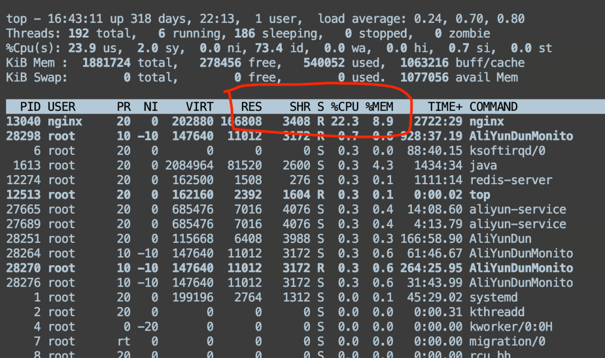
如何结束进程名为aaa的进程？
-
首先，需要找到进程名为 “aaa” 的进程 ID（PID）。可以使用
pgrep命令来查找，pgrep命令用于查找当前运行进程的 PID，它会根据进程名称进行匹配。命令格式为pgrep [选项] 进程名。例如，pgrep aaa会返回名为 “aaa” 的所有进程的 PID。 -
然后，使用
kill命令来结束进程。kill命令用于向指定的进程发送信号，默认发送的是SIGTERM信号，该信号会请求进程正常终止。一般情况下，进程收到这个信号后会进行一些清理工作然后终止。命令格式为kill [选项] PID。例如，如果通过pgrep aaa得到的 PID 是 1234，那么可以使用kill 1234来结束这个进程。 -
如果进程对
SIGTERM信号无响应，还可以使用kill -9 PID（其中-9表示发送SIGKILL信号）来强制结束进程。不过这种方式可能会导致进程没有机会进行清理操作，有可能丢失数据，应该谨慎使用。例如，kill -9 $(pgrep aaa)会强制结束所有名为 “aaa” 的进程。
top命令有哪些参数，说一下
top命令是一个用于实时监控系统资源和进程的命令，它可以显示当前运行的进程、CPU使用情况、内存使用情况等信息。以下是一些常用的top命令参数：
- -d <秒数>：指定top命令刷新的时间间隔，默认为3秒。
- -n <次数>：指定top命令执行的次数后自动退出。
- -p <进程ID>：指定要监控的进程ID。
- -u <用户名>：只显示指定用户名的进程。
- -s <排序字段>：按指定字段对进程进行排序，常见的字段有cpu（CPU使用率）、mem（内存使用率）等。
- -H：显示进程的层次关系。
- -i：只显示运行中的进程，不显示僵尸进程。
怎么显示线程？
在Linux中，可以使用以下命令来显示线程：
- top命令：在top命令的默认显示中，可以看到每个进程的线程数（Threads列）。例如，执行top命令后，按下"Shift + H"键可以切换到线程视图，显示每个进程的线程信息。
- ps命令：通过ps命令结合选项来显示线程。例如，使用"ps -eLf"命令可以显示系统中所有线程的详细信息。
ps命令里都有哪些选项，ps展示哪些东西？
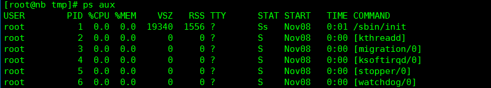
ps命令展示内容：
- PID：进程ID。
- PPID：父进程ID。
- USER：进程所属用户。
- %CPU：CPU占用率。
- %MEM：内存占用率。
- VSZ：虚拟内存大小。
- RSS：物理内存大小。
- TTY：终端设备。
- STAT：进程状态。
- START：进程启动时间。
- TIME：进程累计CPU占用时间。
- COMMAND：进程命令或可执行文件。
ps命令选项：
- -a：显示所有进程，包括其他用户的进程。
- -u：显示用户相关的进程信息。
- -x：显示没有控制终端的进程。
- -e：显示所有进程，等同于-a选项。
- -f：显示详细的进程信息，包括进程的父进程、运行状态等。
- -l：显示长格式的进程信息，包括进程的PID、PPID、CPU占用率等。
- -r：显示正在运行的进程。
- -o：自定义输出格式。
top命令会展示什么东西，里面每一项都是呈现什么样的数据？
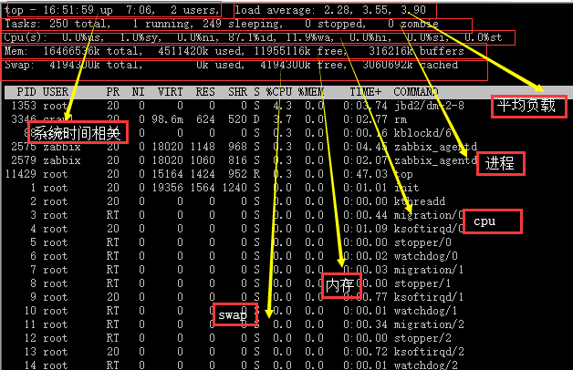
主要会展示：
-
Load average（平均负载）：显示系统在最近1分钟、5分钟和15分钟内的平均负载情况。
-
Tasks（任务）：显示当前运行、睡眠、停止和僵尸状态的进程数量。
-
CPU usage（CPU使用情况）：显示CPU的总体使用率以及每个CPU核心的使用率。
-
Memory usage（内存使用情况）：显示物理内存的总量、已使用量、空闲量、缓冲区和缓存区的使用量。
-
Swap usage（交换空间使用情况）：显示交换空间的总量、已使用量和剩余量。
-
进程列表：显示当前运行的进程列表，包括进程的PID、用户、CPU占用率、内存占用率、进程状态、启动时间和进程命令。
linux 命令怎么看 cpu 占用率？
可以通过 top 命令来查看系统的 cpu 占用率和各个进程的 cpu 占用率。
死锁的时候cpu利用率是高还是低？为什么？
这个关键是看用了什么锁：
- 如果是用了自旋锁，拿不到锁的时候，忙等待，反复探测锁状态，直到拿到锁，进入临界区，这种情况会消耗CPU，如果发生死锁的话，cpu 利用率就会比较高。
- 如果是互斥锁，拿不到锁就让线程休眠的，这时候就相当于放弃了 cpu，不会消耗 cpu，如果发生死锁的话，cpu 利用率就不会升高的。
linux 命令怎么看进程占用的端口？
可以通过 lsof 或者 netstate 命令查看，比如查看 80 端口。
lsof ：
[root@xiaolin ~]# lsof -i :80
COMMAND PID USER FD TYPE DEVICE SIZE/OFF NODE NAME
nginx 929 root 6u IPv4 15249 0t0 TCP *:http (LISTEN)
nginx 929 root 7u IPv6 15250 0t0 TCP *:http (LISTEN)
nginx 934 nginx 6u IPv4 15249 0t0 TCP *:http (LISTEN)
nginx 934 nginx 7u IPv6 15250 0t0 TCP *:http (LISTEN)
AliYunDun 16507 root 10u IPv4 40212783 0t0 TCP xiaolin:41830->100.100.30.26:http (ESTABLISHED)
netstate：
[root@xiaolin ~]# netstat -napt | grep 80
tcp 0 0 0.0.0.0:80 0.0.0.0:* LISTEN 929/nginx: master p
linux 如何查看线程状态？
在 ps 和 top 命令加一下参数，就能看到线程状态了：
top -H
ps -eT | grep <进程名或线程名>
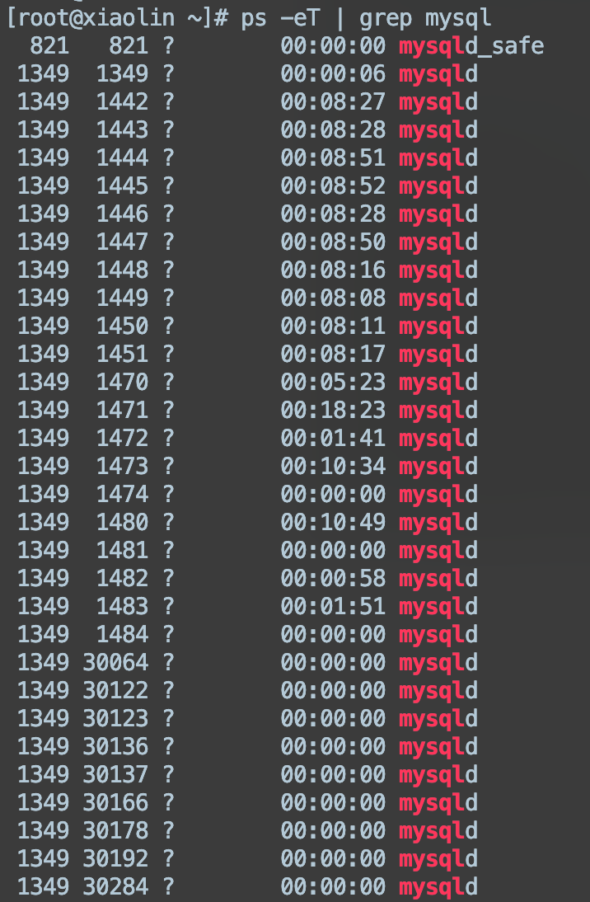
Linux 磁盘io爆满用什么分析 ？
-
检查当前服务器状态：使用
top命令查看系统负载等信息，比如下面的情况,目前一分钟负载为72.56，且呈上升趋势，并且存在io压力
shell> top
top - 19:49:05 up 10 days, 8:16, 2 users, load average: 72.56, 40.21, 17.08
Tasks: 1288 total, 1 running, 586 sleeping, 0 stopped, 0 zombie
%Cpu(s): 19.7 us, 4.2 sy, 0.0 ni, 75.9 id, 1.0 wa, 0.0 hi, 0.2 si, 0.0 st
KiB Mem : 53542118+total, 23667507+free, 22735366+used, 71392448 buff/cache
KiB Swap: 0 total, 0 free, 0 used. 23128006+avail Mem
-
查看当前各个磁盘设备的 IO 情况：使用
iostat -m -x 1命令，比如下面的情况，目前有多块物理磁盘，sda磁盘的io压力较大
shell> iostat -m -x 1
Linux 4.14.0-115.el7a.0.1.aarch64 (mysql-4) 01/08/2022 _aarch64_ (128 CPU)
Device: rrqm/s wrqm/s r/s w/s rMB/s wMB/s avgrq-sz avgqu-sz await r_await w_await svctm %util
sda 0.00 0.00 14213.00 27430.00 222.08 465.15 33.80 5.39 0.13 0.14 0.12 0.02 86.00
sdb 0.00 0.00 0.00 0.00 0.00 0.00 0.00 0.00 0.00 0.00 0.00 0.00 0.00
dm-0 0.00 0.00 0.00 0.00 0.00 0.00 0.00 0.00 0.00 0.00 0.00 0.00 0.00
dm-1 0.00 0.00 0.00 0.00 0.00 0.00 0.00 0.00 0.00 0.00 0.00 0.00 0.00
dm-2 0.00 0.00 0.00 0.00 0.00 0.00 0.00 0.00 0.00 0.00 0.00 0.00 0.00
-
检查特定磁盘（如 sda）的 IO 读写情况：使用
iostat -d /dev/sda -m -x 1命令，比如下面的情况，占用io高的应用程序是mysql，且pid为73739
shell> iostat -d /dev/sda -m -x 1
Linux 4.14.0-115.el7a.0.1.aarch64 (mysql-4) 01/08/2022 _aarch64_ (128 CPU)
Device: rrqm/s wrqm/s r/s w/s rMB/s wMB/s avgrq-sz avgqu-sz await r_await w_await svctm %util
sda 0.00 0.17 7.86 81.23 0.29 3.96 97.88 0.23 2.53 0.22 2.76 0.04 0.33
Device: rrqm/s wrqm/s r/s w/s rMB/s wMB/s avgrq-sz avgqu-sz await r_await w_await svctm %util
sda 0.00 0.00 21109.00 42839.00 329.81 710.90 33.33 19.47 0.30 0.16 0.37 0.02 96.00
Device: rrqm/s wrqm/s r/s w/s rMB/s wMB/s avgrq-sz avgqu-sz await r_await w_await svctm %util
sda 0.00 0.00 19287.00 41404.00 301.36 692.29 33.53 15.73 0.26 0.18 0.30 0.02 93.00
Device: rrqm/s wrqm/s r/s w/s rMB/s wMB/s avgrq-sz avgqu-sz await r_await w_await svctm %util
sda 0.00 0.00 22135.00 43044.00 345.86 1165.18 47.48 100.87 1.55 0.20 2.24 0.01 97.00
-
检查特定磁盘中哪个应用程序占用的 IO 比较高：使用
pidstat -d 1命令。
shell> pidstat -d 1
Linux 4.14.0-115.el7a.0.1.aarch64 (mysql-4) 01/08/2022 _aarch64_ (128 CPU)
08:01:43 PM UID PID kB_rd/s kB_wr/s kB_ccwr/s Command
08:01:44 PM 1000 73739 62018.35 171346.79 0.00 mysqld
08:01:44 PM UID PID kB_rd/s kB_wr/s kB_ccwr/s Command
08:01:45 PM 1000 73739 145328.00 435216.00 0.00 mysqld
08:01:45 PM UID PID kB_rd/s kB_wr/s kB_ccwr/s Command
08:01:46 PM 1000 73739 141488.00 433232.00 0.00 mysqld
-
分析应用程序中哪一个线程占用的 IO 比较高：使用
pidstat -dt -p <进程 ID> 1命令，比如下面这个，由上可知：74770这个线程占用的io比较高
shell> pidstat -dt -p 73739 1 ## 执行两三秒即可
Average: 1000 - 73823 0.00 233133.98 0.00 |__mysqld
Average: 1000 - 74674 0.00 174291.26 0.00 |__mysqld
11:56:18 PM 1000 - 74770 124928.00 74688.00 0.00 |__mysqld
11:56:17 PM 1000 - 74770 124603.77 73358.49 0.00 |__mysqld
Average: 1000 - 74770 124761.17 74003.88 0.00 |__mysqld
-
分析线程在干什么：使用
perf trace -t <线程 ID> -o /tmp/tmp_aa.pstrace命令，然后查看生成的文件，比如下面的情况，目前这个线程在写入多个文件，fd为文件句柄，文件句柄号有64、159
Shell> perf trace -t 74770 -o /tmp/tmp_aa.pstrace
Shell> cat /tmp/tmp_aa.pstrace
2850.656 ( 1.915 ms): futex(uaddr: 0x653ae9c4, op: WAIT|PRIVATE_FLAG, val: 1) = 0
2852.572 ( 0.001 ms): futex(uaddr: 0x653ae990, op: WAKE|PRIVATE_FLAG, val: 1) = 0
2852.601 ( 0.001 ms): clock_gettime(which_clock: MONOTONIC, tp: 0xfff7bd470f68) = 0
2852.690 ( 0.040 ms): write(fd: 159, buf: 0xd7a30020, count: 65536) = 65536
2852.796 ( 0.001 ms): clock_gettime(which_clock: MONOTONIC, tp: 0xfff7bd470f68) = 0
2852.798 ( 0.001 ms): clock_gettime(which_clock: MONOTONIC, tp: 0xfff7bd470f58) = 0
2852.939 ( 0.001 ms): clock_gettime(which_clock: MONOTONIC, tp: 0xfff7bd470f38) = 0
2852.950 ( 0.001 ms): clock_gettime(which_clock: MONOTONIC, tp: 0xfff7bd470f68) = 0
2852.977 ( 0.001 ms): clock_gettime(which_clock: MONOTONIC, tp: 0xfff7bd470f68) = 0
2853.029 ( 0.035 ms): write(fd: 64, buf: 0xcd51e020, count: 65536) = 65536
2853.164 ( 0.001 ms): clock_gettime(which_clock: MONOTONIC, tp: 0xfff7bd470f68) = 0
2853.167 ( 0.001 ms): clock_gettime(which_clock: MONOTONIC, tp: 0xfff7bd470f58) = 0
2853.302 ( 0.001 ms): clock_gettime(which_clock: MONOTONIC, tp: 0xfff7bd470f38) = 0
-
查看线程操作的文件句柄：使用
lsof -p <进程 ID>|grep <文件句柄>命令，比如下面，这个线程在大量的写入临时文件
shell> lsof -p 73739|grep 159u
mysqld 73739 mysql 159u REG 8,0 212143246 7046482357 /mysql/mysqldata/16320fff-5fd5-4c47-889a-a9e1a8591d0d/tmp/#7046482357 (deleted)
[root@mysql-4 ~]# lsof -p 73739|grep 64u
mysqld 73739 mysql 64u REG 8,0 211872724 6979323031 /mysql/mysqldata/16320fff-5fd5-4c47-889a-a9e1a8591d0d/tmp/#6979323031 (deleted)
Linux 网络tcp连接详情怎么查看？
可以用 netstat 命令来查看tcp 网络连接的情况。
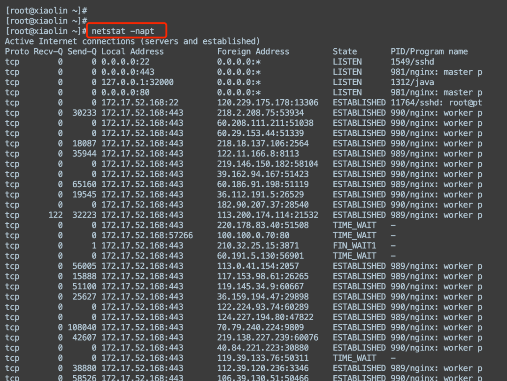
12. 删除文件A/移动文件A到B命令是什么？
删除文件A的命令通常是在命令行中使用"rm"命令，例如：
rm A
这将删除当前目录下的文件A。
移动文件A到B的命令通常是使用"mv"命令，例如：
mv A B
这将把文件A移动到目标位置B，并且文件A在原始位置将被删除。如果目标位置B已经存在同名文件，则会覆盖该文件。如果目标位置B是一个目录，则文件A将被移动到该目录下。